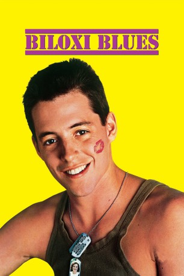

#11451 Biloxi Blues
 
 IMDB-Wertung: 6.6 / 10
IMDB-Wertung: 6.6 / 10  Tomatometer: 81
Tomatometer: 81  Metascore: 61
Metascore: 61 
Es das letzte Kriegsjahr des Zweiten Weltkrieges: In dem Boot Camp von Biloxi, Mississippi, werden die Rekruten auf den Einsatz im Krieg vorbereitet. Unter ihnen Eugene Morris Jerome, frisch aus Brooklyn transferiert, mit seinen 20 Jahren noch am Anfang seines Lebens stehend. Auch wenn die Situation nicht gerade dazu einlädt, möchte Eugene ausgerechnet in dieser Umgebung zum Mann reifen – gerade in sexueller Hinsicht. Von diesem ambitionierten Vorhaben soll ihn auch nicht sein exzentrischer Drill-Sergeant Toomey abhalten …
Jahr: 1988
Dauer: 106 Minuten
FSK: 16
Land: USA Studio: Universal PicturesTonspuren:
Untertitel:
Auflösung: 1080p (1920x816) Größe: 8939 MB
Genre: Drama, Komödie
Regisseur: Mike Nichols
Drehbuch: Neil Simon, Neil Simon
Soundtrack: Georges Delerue
Darsteller:
 Matthew Broderick als Eugene Morris Jerome
Matthew Broderick als Eugene Morris Jerome Christopher Walken als Sgt. Toomey
Christopher Walken als Sgt. Toomey- Matt Mulhern als Joseph Wykowski
- Corey Parker als Arnold B. Epstein
 Markus Flanagan als Roy Selridge
Markus Flanagan als Roy Selridge Casey Siemaszko als Don Carney
Casey Siemaszko als Don Carney Penelope Ann Miller als Daisy
Penelope Ann Miller als Daisy- Park Overall als Rowena
- David Kienzle als Corporal
 Matthew Kimbrough als Spitting Cook
Matthew Kimbrough als Spitting Cook Kirby Mitchell als Digger #1
Kirby Mitchell als Digger #1- Natalie Canerday als Natalie Canterday
- Shirley Jordan als Additional Voice
- Craig Sechler als Additional Voice
- Michael Dolan als James J. Hennesey
- Alan Pottinger als Peek
- Mark Evan Jacobs als Pinelli
- Allen Turner als Digger #2
- Tom Kagy als Digger #3
- Jeff Bailey als Mess Hall Corporal
- Bill Russell als Rifle Instructor
- A. Collin Roddey als Pvt. Roddey
- Christopher Ginnaven als Cpl. Ginnaven
- Morris Mead als Cpl. Mead
- David Whitman als Tower Officer
- Norman Rose als Newsreel Announcer
- Michael Haley als Cpl. Haley
- Ben Hynum als Pvt. Lindstrom
- Andy Wigington als Cpl. Wigington
- Christopher Phelps als Pvt. Phelps
- Scott Sudbury als Pvt. Sudbury
- Katherine Barry als Additional Voice
- Ed Bradley als Additional Voice
- Charles Dietz als Additional Voice
- John Fedinatz als Additional Voice
- Lee Jines als Additional Voice
- Tina Kalimos als Additional Voice
- John Anthony Lack als Additional Voice
- Conan McCarty als Additional Voice
- Albert Owens als Additional Voice
- Virginia Sandifur als Additional Voice
- Jeffrey Shafer als Additional Voice
- David James Sharp als Additional Voice
- Robert McCrary als Private Ryan (uncredited)
Datei: X:\1988\Biloxi Blues (1988, FSK16, 1920x816).mkv seit 09.07.2019
Festplatte: Gemischt-01+Anime
 Es gibt insgesamt 66 Filme in der Gruppe '1988'
Es gibt insgesamt 66 Filme in der Gruppe '1988'